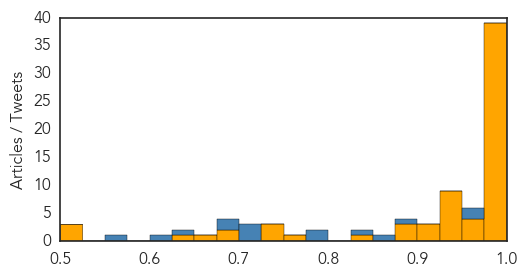
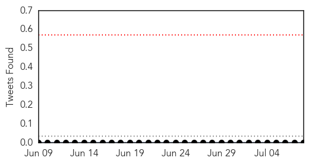

Ebola
30-Day Web Trend
0 alerts, 0 warnings

30-Day Twitter Trend
1 alerts, 0 warnings

Article Locations

Article Confidences
Top Articles:
- 1.000
- The Ebola virus has spread to Senegal as the deadliest outbreak in history gets worse
- 1.000
- World Health Organisation slammed on Ebola response
- 1.000
- Fund health infrastructure to avert epidemics
- 1.000
- 2nd Ebola Case Declared as Health Workers Protest
- 1.000
- Liberia Records Ebola Death After Country Declared Virus-Free
- 1.000
- Zimbabwe Daily – Your News! Your Views! Your Life!
- 1.000
- Why Canada Needs a Radically Changed World Health Organization
- 1.000
- Liberia confirms third Ebola case in new outbreak
- 0.999
- Liberia confirms third Ebola virus case
- 0.999
- Initial Ebola test on Liberia dog carcass negative - sources
- 0.999
- Source of new Liberian Ebola outbreak a mystery: WHO - Liberia
- 0.999
- Source of new Liberian Ebola outbreak a mystery: WHO
- 0.998
- President Mugabe in US for Ebola summit
- 0.998
- N.J. man has malaria, not Ebola
- 0.998
- Lack of people, supplies and money plague Africa's Ebola fight-experts
- 0.998
- Military personnel returning to US pose low risk for Ebola transmission
- 0.998
- Reemergence of Ebola epidemic in Liberia, test on dog carcass tested negative, for now
- 0.997
- Lack of people, supplies and money plague Africa's Ebola fight-experts
- 0.997
- Lack of people, supplies and money plague Africa's Ebola fight
- 0.997
- Second Ebola Case Confirmed In Liberia
- 0.996
- Lack of people, supplies and money plague Africa's Ebola fight: experts
- 0.994
- Report Says Ebola Response Flawed
- 0.994
- Report: Politics factored into UN's botched Ebola response
- 0.994
- Ebola Monitoring in Texas Expires for Some
- 0.994
- BBC News: WHO ‘unfit for health emergencies
- 0.993
- Ebola ruled out for NJ man with like symptoms
- 0.993
- Report calls for urgent change at WHO, following inadequate Ebola response
- 0.992
- Scathing Report on Ebola Urges Major Changes at World Health Organization
- 0.991
- WHO ‘unfit for health emergencies’ — Talk Vietnam
- 0.991
- WHO ill-equipped to handle a crisis like Ebola, report says
- 0.991
- Sierra Leone extends Ebola curfews indefinitely - Sierra Leone
- 0.991
- WHO 'Unfit For Health Emergencies'
- 0.989
- Mugabe in New York for Ebola Summit
- 0.987
- Panel finds politics botched U.N. agency's response to Ebola
- 0.986
- Building bridges after Ebola: how local peacebuilders are helping to prevent conflict in Sierra Leone - Sierra Leone
- 0.985
- WHO is not equipped to handle a crisis like Ebola, report says
- 0.984
- UNICEF teams, supplies arrive in areas affected by new Ebola cases in Liberia
- 0.978
- Ebola ruled out in case of sick Neptune man
- 0.978
- Ebola ruled out in case of sick Neptune man
- 0.968
- Kenya : Countries most affected by Ebola lobby for funding for infrastructure
- 0.966
- New Jersey Ebola Scare Is Over, Man Tests Positive for Malaria
- 0.964
- Statement on the 6th meeting of the IHR Emergency Committee regarding the Ebola outbreak
- 0.954
- African countries react to report on WHO bungling Ebola response
- 0.950
- Infectious Diseases « mykeystrokes.com
- 0.943
- WHO ‘failed’ in Ebola outbreak
- 0.942
- Former Hong Kong health director Margaret Chan comes under fire over WHO leadership during Ebola crisis
- 0.940
- WHO, not fit and inadequate in responding to the Ebola crisis
- 0.939
- President Koroma faces protest at upcoming International Ebola Recovery Conference in New York
- 0.938
- Health and Sanitation Minister, Dr. Abu Bakarr Fofanah, appointed Founding Co-Chairman of the World Medicine Summit
- 0.937
- ‘Visiting President’ leaves for New York
Showing top 50 articles...
Top Tweets:
- 0.971
- Ebola Vaccine Components Do Not Cause Ebola Disease! - GhanaWeb http://t.co/C8RNHkZerA ebola EVD
- 0.965
- Experts Say World Health Organization Unable to Handle Ebola Outbreak - Newsweek http://t.co/SZjqMjLHCG ebola EVD
- 0.891
- Scathing report on Ebola urges major changes at World Health Organization - Emergency Management http://t.co/fxAj0Bl0Iz ebola EVD
- 0.868
- RT: "Ebola ravaged skilled human resources." Read our latest blog "Beyond Ebola: a time for action in SierraLeone": http:…
- 0.840
- RT: Today's Ebola executive summary: cases grow in new Liberia cluster and five new cases in Sierra Leone since July 1 http…
- 0.798
- Ebola cases evade detection due to ongoing lack of trust in communities – UN - UN News Centre http://t.co/IzNbR7VAG3 ebola EVD
- 0.788
- Experts Say World Health Organization Unable to Handle Ebola Outbreak - Newsweek http://t.co/K4dldFkqwd
- 0.723
- Lack of people supplies and money plague Africa's Ebola fight: experts - Reuters http://t.co/Ze1sgO7blN ebola EVD
- 0.723
- Lack of people supplies and money plague Africa's Ebola fight - experts - Reuters http://t.co/tNGEKxn37D ebola EVD
- 0.711
- Ebola: @WHO says more cases (30) in the past wk than since mid-May. Still unclear how virus returned to Liberia. Maybe be 4th case there.
- 0.681
- NJ Health Dept.: Ebola ruled out in Hazmat scare in Lakewood - Asbury Park Press http://t.co/32Rxhk6yMl ebola EVD
- 0.678
- LISTEN: More on a damning report served on the World Health Organisation after its failings over the ebola outbreak. http://t.co/ympOk15OW0
- 0.636
- SierraLeone. There’s a health crisis in West Africa – and it’s not Ebola http://t.co/eTJoBjUnNW
- 0.608
- After Ebola outbreak missteps must re-establish itself as 'guardian of global public health' – review panel https://t.co/oMr2RGoKR3
- 0.561
- Today's Ebola executive summary: cases grow in new Liberia cluster and five new cases in Sierra Leone since July 1 http://t.co/pMImOBkw4t
Measles
30-Day Web Trend
2 alerts, 3 warnings

30-Day Twitter Trend
0 alerts, 0 warnings

Article Locations

Article Confidences

Top Articles:
- 0.996
- World: West and Central Africa Region Weekly Humanitarian Snapshot (30 June -06 July 2015)
- 0.981
- Measles virus tracked though genomic testing finds one overseas visitor caused 61 B.C. cases
- 0.967
- The anti-vaxxer threat: A recent study highlights the dangers of science denialism
- 0.923
- Measles kills first patient in 12 years
- 0.891
- Washington Woman Dies from Measles, First Death in 12 Years
- 0.883
- Washington woman who died of measles had been vaccinated
- 0.842
- The Woman Who Died Of Measles Had Been Vaccinated Against It
- 0.836
- Risk of preventable disease is much greater than any risk posed by vaccines
- 0.797
- Measles growing fatal: A woman died in Washington
- 0.772
- Despite lack of evidence, 20% of Ontarians believe some vaccines cause autism: new poll
- 0.741
- The U.S. Just Reported Its First Confirmed Measles Death in 12 Years
- 0.737
- Practices and hesitancy among general physicians in France
- 0.716
- Lax immunization laws in 18 states need to change
- 0.632
- First measles death in United States in 12 years
Top Tweets:
-
No tweets found for Jul 08, 2015